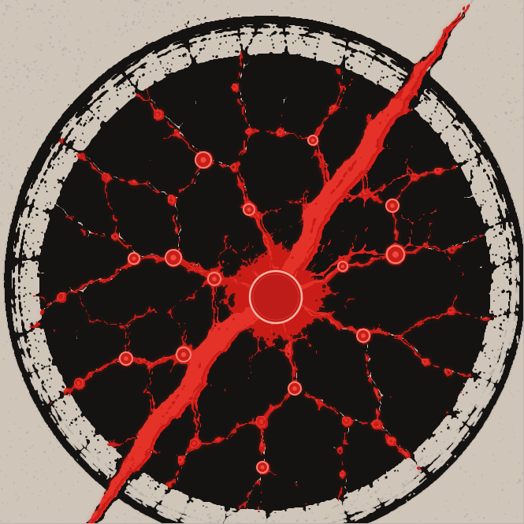

Comparaison de travail uniquement. La variante B superpose des groupes rouges extraits de l'original retracé, sans validation géométrique ou artistique. Aucun fichier actif n'est remplacé.
Source retracée de Zout
Géométrie originale différente de la base Faille noire.
A · Candidat PR #147
Base commune exacte, réseau rouge moins dense.
B · Ramifications originales superposées

Base inchangée, trois groupes rouges réintroduits ; vérifier visuellement les décalages.
Tailles de contrôle
R6-GRA-02 · Aucun visa artistique, aucune fusion, aucune publication.